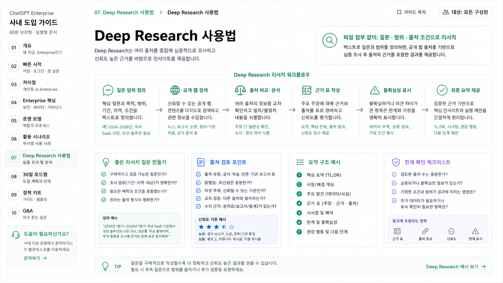

시장 조사
산업 동향, 경쟁사 움직임, 제품 비교, 기술 채택 사례를 출처와 함께 정리합니다.
Deep Research
Deep Research는 공개 웹과 접근 가능한 자료를 바탕으로 긴 조사와 보고서 초안을 만들 때 유용합니다. 파일 첨부 없이 사용할 때는 조사 질문, 기간, 지역, 제외할 출처, 원하는 보고서 형식을 정확히 지정해야 합니다.

내부 문서 파일을 올리지 않고, 공개 웹 자료와 사용자가 텍스트로 제공한 배경만 활용합니다. 비공개 내부 자료는 요약 수준으로만 입력합니다.
산업 동향, 경쟁사 움직임, 제품 비교, 기술 채택 사례를 출처와 함께 정리합니다.
공개 법령, 기관 자료, 공식 문서를 기반으로 변경점과 영향 범위를 요약합니다.
찬반 근거, 리스크, 확인 필요 사항을 경영진 보고 형식으로 정리합니다.
질문 설계
| 항목 | 왜 필요한가 | 예시 |
|---|---|---|
| 질문 | 조사의 중심을 하나로 고정합니다. | 2025년 이후 국내 제조업의 생성형 AI 도입 사례를 조사해줘. |
| 기간과 지역 | 오래된 정보와 무관한 지역 자료를 줄입니다. | 2024년 1월 이후, 한국과 일본 중심. |
| 출처 조건 | 신뢰도 낮은 블로그와 광고성 글을 피합니다. | 공식 발표, 공공기관, 학술자료, 주요 언론 우선. |
| 산출물 | 조사 결과를 바로 업무에 쓸 수 있게 합니다. | 요약, 근거 표, 리스크, 추가 확인 질문 순서로 작성. |
검증
핵심 주장마다 공식 출처나 신뢰 가능한 근거가 붙어 있는지 확인합니다.
정책, 가격, 기능, 시장 수치는 날짜가 오래되면 다시 확인합니다.
공개 자료의 결론이 사내 상황에 바로 맞는지 담당자가 판단합니다.
복사해서 쓰기
조사 질문:
업무 배경:
파일 첨부 없이 진행해야 하므로, 공개 웹과 아래 텍스트 맥락만 활용해줘.
내가 제공하는 맥락:
조사 범위:
- 기간:
- 지역:
- 포함할 출처:
- 제외할 출처:
원하는 산출물:
1. 10줄 이내 핵심 요약
2. 근거 표: 주장, 출처, 날짜, 신뢰도, 메모
3. 우리 업무에 주는 의미
4. 리스크와 반론
5. 추가 확인이 필요한 질문
주의:
- 출처 없는 주장은 분리해 표시
- 최신성이 중요한 내용은 날짜를 명시
- 확정적으로 말하기 어려운 내용은 한계로 적기